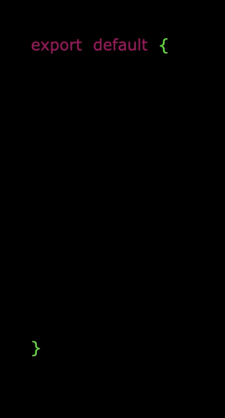
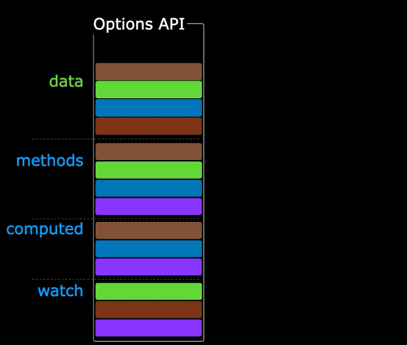
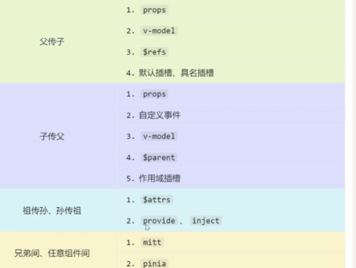

vue3
Vue3 是什么？
Vue (读音 /vjuː/，类似于 view) 是一款用于构建用户界面的 渐进式 JavaScript 框架。
-
性能提升：打包大小减少约 41%，初次渲染快 55%，内存占用减少 54%。
-
源码升级：使用 TypeScript 重构，自带更好的类型推导。
-
核心特性：拥抱 Composition API（组合式 API），让逻辑复用变得极其简单。
创建 Vue3 工程
基于 vue-cli 创建
该种创建方式基于 Webpack，目前已处于维护模式，不再推荐用于新项目。
npm install vue/cli
vue create xxx
基于 vite 创建
# 执行创建命令
npm create vue@latest
# 按照提示选择配置（如 TS, Vue Router, Pinia 等）
Webpack 在启动时需要先抓取整个应用的依赖并构建；而 Vite 利用了浏览器原生的 ES Modules，只有在浏览器请求某个模块时才进行实时编译，实现“秒开”。
Vue3 核心语法
OptionsAPI 与 CompositionAPI
Options API 的弊端
Options类型的 API，数据、方法、计算属性等，是分散在：data、methods、computed中的，若想新增或者修改一个需求，就需要分别修改：data、methods、computed，不便于维护和复用。

Composition API 的优势
可以用函数的方式，更加优雅的组织代码，让相关功能的代码更加有序的组织在一起。

拉开序幕的 setup ⭐⭐⭐
setup 概述
setup是Vue3中一个新的配置项，值是一个函数，它是 Composition API “表演的舞台”，组件中所用到的：数据、方法、计算属性、监视......等等，均配置在setup中。
-
setup函数返回的对象中的内容，可直接在模板中使用。 -
setup中访问this是undefined。 -
setup函数会在beforeCreate之前调用，它是“领先”所有钩子执行的。
setup 的返回值
若返回一个对象：则对象中的：属性、方法等，在模板中均可以直接使用（重点关注）。
若返回一个函数：则可以自定义渲染内容，代码如下：
setup(){
return ()=> '你好啊！'
}
setup 与 Options Api 的关系
1、Vue2 的配置（data、methos......）中可以访问到 setup中的属性、方法。
2、但在setup中不能访问到Vue2的配置（data、methos......）。
3、如果与Vue2冲突，则setup优先。
setup 语法糖
setup函数有一个语法糖，这个语法糖，可以让我们把setup独立出去，代码如下：
<!-- 下面的写法是setup语法糖 -->
<script setup lang="ts">
console.log(this) //undefined
// 数据（注意：此时的name、age、tel都不是响应式数据）
let name = '张三'
let age = 18
let tel = '13888888888'
// 方法
function changName(){
name = '李四'//注意：此时这么修改name页面是不变化的
}
function changAge(){
console.log(age)
age += 1 //注意：此时这么修改age页面是不变化的
}
function showTel(){
alert(tel)
}
</script>
但是，用了上述的语法糖，我们就没法在这个 标签下配置当前组件的名称了，vue3 提供了 defineOptions 来让我们在 setup 里面配置其他组件属性。
defineOptions({
name: 'person1'
})
ref 创建响应式数据 ⭐⭐
ref 不仅可以创建基本类型的响应式数据，还可以创建引用类型的响应式数据！
let a = ref('0')
let person = ref<PersonInterface>({
id:"1",
name: '张三',
age: 18
})
💡需要注意，ref 返回的是一个 RefImpl 类型的对象，在 Js 中操作数据，需要 .value
💡若ref接收的是对象类型，内部其实也是调用了reactive函数。
reactive 创建响应式数据 ⭐⭐
reactive 只能创建对象类型的响应式数据，它的返回值是一个 Proxy 实例对象
let p = reactive<PersonInterface>({
id: "1",
name: '张三',
age: 18
})
ref 与 reactive 的对比 ⭐⭐
从宏观角度来看，ref 用来定义基本 + 对象数据类型的响应式数据，而 reactive 用来定义对象数据类型的响应式数据。
在 Js 中，如果操作 ref 定义的数据，需要 .value，而 reactive 不需要。
使用原则
1、若需要一个基本类型的响应式数据，必须使用ref
2、若需要一个响应式对象，层级不深，ref、reactive都可以。
3、若需要一个响应式对象，且层级较深，推荐使用reactive
toRefs 与 toRef
如果直接从一个响应式对象中结构数据，会丢失掉响应式，解决方法就是 toRefs。
它们是用来将一个响应式对象中的每一个属性，转换为ref对象。只不过 torefs 是批量转换，而 toRef 每次只转一个。
let price = toRef(car, "price")
let {a, b} = toRefs(car)
computed ⭐⭐⭐
根据已有数据计算出新数据（和Vue2中的computed作用一致）。新数据本质还是 ref 产生的响应式数据类型。ComputedRefImpl
计算属性是只读属性，当它以来的属性发生变化时，会自动的重新计算，如果没发生变化，则用之前已经算出来的值。
<script setup lang="ts">
import {computed, ref} from "vue";
let firstName = ref("zhang");
let lastName = ref("san");
let fullName = computed(
{
get() {
return firstName.value + " " + lastName.value;
},
set(value) {
let names = value.split(" ");
firstName.value = names[0];
lastName.value = names[1];
}
}
)
console.log(fullName);
</script>
watch⭐⭐
watch 是用来监视数据的变化，在数据变化的时候执行函数，在 Vue3 中，watch 能够监听下面这四种数据
1、ref 定义的响应式数据
2、reactive 定义的响应式数据
3、函数返回的一个值
4、包含上前类型的一个数组
watch 监听情况一
监视ref定义的【基本类型】数据：直接写数据名即可，监视的是其value值的改变。
let sum = ref(0)
watch(sum, (newValue, oldValue) => {
console.log(newValue, oldValue)
})
watch 监听情况二
监视ref定义的【对象类型】数据：直接写数据名，监视的是对象的【地址值】，若想监视对象内部的数据，要手动开启深度监视。
let person = ref({
name: "张三",
age: 18
})
// 开始深度监听，任何属性或者地址发生变化，都能监听到
// 当前监听的是整个person对象，不关心person.name和person.age的变化，如果想要监听属性的变化，需要开启深度监听
/*
* 参数一：监听的数据源
* 参数二：监听的回调（新值，旧值） 如果修改的是对象的属性，则新值和旧值都是同一个对象，所以是一样的，但如果想改了整个对象，则新值和旧值是不同的
* 参数三：监听的配置项（对象）{deep:true, immediate...等等}
* */
watch(person, (newValue, oldValue) => {
console.log(newValue, oldValue)
}, {deep:true})
watch 监听情况三
监视reactive定义的【对象类型】数据，且默认开启了深度监视。
let person = reactive({
name: "张三",
age: 18
})
/*
情况三：watch 监听的是一个 reactive 定义的对象类型响应式数据，默认开始深度监听
* */
watch(person, (newValue, oldValue) => {
console.log(newValue, oldValue)
})
watch 监听情况四
监视ref或reactive定义的【对象类型】数据中的某个属性，注意点如下：
1、若该属性值不是【对象类型】，需要写成函数形式。
2、若该属性值是依然是【对象类型】，可直接编，也可写成函数，建议写成函数。
结论：监视的要是对象里的属性，那么最好写函数式，注意点：若是对象监视的是地址值，需要关注对象内部，需要手动开启深度监视。
/*
* 情况四：我现在只想监听对象中的特定的属性（非对象），而非所有属性 --> function
* 如果监听的是对象中的一个对象，此时可以是函数返回了，可以直接监听，但要注意，如果直接监听的话，监听不到整个对象的变化
* 所以，无论是基本类型，还是对象类型，单个监听的时候都推荐写成 function
* */
watch(()=>person.car, (newValue, oldValue) => {
console.log(newValue, oldValue)
},{deep:true} )
watch 监听情况五
监视上述的多个数据
/*
* 情况五：我现在想同时监听多个数据源：[fun1, fun2, ref1, reactive1]
* */
watch([()=>person.name, ()=>person.car], (newValue, oldValue) => {
console.log(newValue, oldValue)
},{deep:true} )
watchEffect
官网：立即运行一个函数，同时响应式地追踪其依赖，并在依赖更改时重新执行该函数。
其实，watchEffect 才是神！watch 需要我们显示给出要监听什么数据，而在 watchEffect 中，我们直接写逻辑即可，在逻辑中，用到了什么数据，就监听什么数据。
// 用watch实现，需要明确的指出要监视：temp、height
watch([temp,height],(value)=>{
// 从value中获取最新的temp值、height值
const [newTemp,newHeight] = value
// 室温达到50℃，或水位达到20cm，立刻联系服务器
if(newTemp >= 50 || newHeight >= 20){
console.log('联系服务器')
}
})
// 用watchEffect实现，不用
const stopWtach = watchEffect(()=>{
// 室温达到50℃，或水位达到20cm，立刻联系服务器
if(temp.value >= 50 || height.value >= 20){
console.log(document.getElementById('demo')?.innerText)
console.log('联系服务器')
}
// 水温达到100，或水位达到50，取消监视
if(temp.value === 100 || height.value === 50){
console.log('清理了')
stopWtach()
}
})
标签中的 ref 属性
标签中的 ref 属性用于注册模板的引用（其实就是 dom | 组件实例的引用）
-
用在普通
DOM标签上，获取的是DOM节点。 -
用在组件标签上，获取的是组件实例对象。
<div class="person">
<h2 ref="title2">前端</h2>
<h3 ref="title3">Vue</h3>
<button @click="showLog">点我打印内容</button>
</div>
let title1 = ref()
let title2 = ref()
let title3 = ref()
// 通过ref获取元素
console.log(title1.value)
console.log(title2.value)
console.log(title3.value)
props
Props 是插件化、组件化开发的核心。父组件通过 属性 向子组件传递数据，子组件通过 声明 来接收。
// 基础用法
const props = defineProps(['list', 'title'])
// ts 写法
import { type PersonInterface } from "@/types"
// 使用接口定义 Props
defineProps<{
list: PersonInterface[],
title?: string // 加问号表示可选
}>()
下面是带默认值的写法，需要借助编译器宏 withDefaults
let props = withDefaults(defineProps<{
list?:Persons
}>(), {
list:()=>{
return [
{
id: "1",
name: "张三",
age: 18
},
{
id: "2",
name: "李四",
age: 20
}
]
}
})
Vue3 生命周期
在 Vue3 的 Composition API 中，setup 函数会在 beforeCreate 之前调用，它是“领先”所有钩子执行的。
onBeforeMount(()=>{
console.log("onBeforeMount")
})
onMounted(()=>{
console.log("onMounted")
})
在 Vue3 的 Composition API 中，生命周期钩子的命名和语义发生了一些变化，主要表现为在 Vue2 的基础上增加了 on 前缀，并对“销毁”阶段进行了重命名：
| 生命周期阶段 | Vue2 生命周期 (4对) | Vue3 生命周期 | 核心差异与说明 |
|---|---|---|---|
| 创建阶段 | beforeCreatecreated |
setup() | Vue3 的 Composition API 中去除了 beforeCreate 和 created，与之相关的初始化逻辑统一放在 setup() 函数中执行即可。 |
| 挂载阶段 | beforeMountmounted |
onBeforeMount onMounted |
仅在命名上增加了 on 前缀。 |
| 更新阶段 | beforeUpdateupdated |
onBeforeUpdate onUpdated |
仅在命名上增加了 on 前缀。 |
| 卸载阶段 | beforeDestroydestroyed |
onBeforeUnmount onUnmounted |
核心差异：Vue3 将 Vue2 中的“销毁（Destroy）”概念变更为更加准确的“卸载（Unmount）”。 |
Vue3 自定义hooks ⭐⭐⭐
在 Vue3 中，自定义 hook 本质上是一个函数。它的主要作用是将 setup 函数中使用的 Composition API（组合式 API）进行提取和封装，其设计理念类似于 Vue2.x 中的 mixin。
个规范的 Hook 通常包含：响应式数据、操作方法、生命周期钩子。
// src/hooks/useMousePosition.js
import { ref, onMounted, onUnmounted } from 'vue'
export function useMousePosition() {
// 1. 定义响应式数据
const x = ref(0)
const y = ref(0)
// 2. 定义操作逻辑
const update = (e) => {
x.value = e.pageX
y.value = e.pageY
}
// 3. 绑定生命周期
onMounted(() => window.addEventListener('mousemove', update))
onUnmounted(() => window.removeEventListener('mousemove', update))
// 4. 暴露给外部 (通常返回一个对象)
return { x, y }
}
// 使用的时候直接：
const {x, y} = useMousePosition()
Vue3 Router⭐⭐⭐
Vue3 Router 基础用法
与 vue 2 除了在使用上有略微区别外，其他也没什么了。
| 特性 | Vue Router 3.x (Vue 2) | Vue Router 4.x (Vue 3) |
|---|---|---|
| 创建实例 | new VueRouter({ ... }) |
createRouter({ ... }) |
| 模式设置 | mode: 'history' |
history: createWebHistory() |
| 组件访问 | this.$router / this.$route |
useRouter() / useRoute() |
| 基础路径 | base 属性 |
并入 createWebHistory('/base') 参数中 |
初始化 router 的时候，不再需要 new VueRouter了，而是如下，并且一定要指定路由器的路由模式，vue2 通过 mode 去配置，默认是哈希模式。
import { createRouter, createWebHistory } from 'vue-router'
const router = createRouter({
// 1. 必须指定 history 模式
history: createWebHistory(),
routes: [
{ path: '/', component: () => import('./views/Home.vue') // 懒加载}
]
}
export default router
在 setup 中，由于没有 this，所以不能像 vue2 那样 this.$route | router，而是通过插件提供的 hook：useRoute、useRouter 。
此外，vue2 中是 router-link 和 router-view 标签，在 vue3 中， 推荐使用大驼峰 <RouterLink> / <RouterView>（更符合 Vue3 组件规范，且能与原生 HTML 标签一眼区分）。
<RouterLink to="/home" custom v-slot="{ navigate }">
<button @click="navigate" role="link">回到首页</button>
</RouterLink>
Vue3 嵌套路由
和 vue2 也没什么区别，反正就是要注意在子路由中，不能再去写 / 了。
const routes=[
{
name:'test1',
path:'/test1',
component:()=>import('@/components/test1.vue'),
children:[
{
name:'test11',
path:'test11',
component:()=>import('@/components/test11.vue')
},
{
name:'test12',
path:'test12',
component:()=>import('@/components/test12.vue')
}
]
},
Vue3 路由守卫
路由守卫的核心作用是在路由跳转前、后进行逻辑拦截（如：登录检查、权限校验、进度条控制）。
和 vue2 一样，路由守卫还是分为了三类：1）全局守卫 2）独享路由守卫 3）组件内路由守卫。但是在 vue3 中，淡化了 next() 的使用，直接返回 true 或者不返回就是放行。
全局前置守卫 (beforeEach) ⭐⭐⭐
// router/index.js
router.beforeEach((to, from) => {
const isAuthenticated = !!localStorage.getItem('token')
// 如果去往需要权限的页面且未登录
if (to.meta.requiresAuth && !isAuthenticated) {
// 返回目标路由地址，直接跳转
return { name: 'Login' }
}
// 返回 true 或不返回，则允许通行
return true
})
组件内守卫 (Composition API 风格)
<script setup>
import { onBeforeRouteLeave, onBeforeRouteUpdate } from 'vue-router'
// 场景：用户填了表单没保存想离开
onBeforeRouteLeave((to, from) => {
const answer = window.confirm('你还没保存，确定要离开吗？')
if (!answer) return false // 返回 false 取消导航
})
// 场景：路由参数变化（如 /post/1 变到 /post/2），但组件被复用时
onBeforeRouteUpdate((to, from) => {
console.log('文章 ID 变了：', to.params.id)
})
</script>
独享守卫
这个和 vue2 没什么区别
const routes = [
{
path: '/admin',
component: AdminPage,
beforeEnter: (to, from) => {
// 可以在这里 reject 掉非管理员用户
if (!isAdmin()) return '/404'
},
},
]
Vue3 路由传参
和 vue2 没什么区别，路由参数有 query 和 param，当用 param 时候必须在路由规则中说明，然后 to 的时候如果是对象写法，必须配合 name 去使用。
| 方式 | 对应 URL 样式 | 刷新是否丢失 | 获取方式 | 备注 |
|---|---|---|---|---|
| Query 传参 | /test?id=1&name=jack |
否 | route.query |
类似 GET 请求，参数显示在地址栏。 |
| Params 传参 | /test/:id/:name |
否 (需占位) | route.params |
类似 RESTful 风格，需在路径中声明占位符。 |
接收参数
（1）通过 route.query|param 即可拿到参数
<script setup>
import { useRoute } from 'vue-router'
const route = useRoute()
console.log(route.params.id)
</script>
（2）配置路由的 props 属性：如果写 true，只能处理 param 参数。
{
path: '/user/:id',
component: User,
// 1. 最简单写法
props: true // 将 params 参数作为 props 传递给组件，只能处理params参数
// 2. 函数式写法（重点掌握）
props:(route:any)=>{ // 可以处理 query 参数
return {
id:route.params.id,
name:route.params.name
}
},
}
// 3. 对象写法（用到非常少）
props:{
k1:v1,
k2:v2...
}
}
<script setup>
// 直接像普通 props 一样接收，不再需要 useRoute
const props = defineProps(['id'])
console.log(props.id)
</script>
Vue3 编程式路由
和 vue2 的 api 没什么区别，就是 vue2 要通过 this.$router，而 vue3 则是 useRouter
| 方法 | 行为描述 | 适用场景 |
|---|---|---|
router.push(loc) |
向栈中添加新记录 | 普通跳转、详情页 |
router.replace(loc) |
替换当前记录 | 登录页、重定向、中间过渡页 |
router.go(n) |
在历史记录中跳转 n 步 |
返回上一页 go(-1)、前进一页 go(1) |
router.back() |
相当于 go(-1) |
后退按钮 |
router.forward() |
相当于 go(1) |
前进按钮 |
Vue3 Router关键差异点 (避坑指南)
1）Vue Router 4 不再支持直接写 path: '*'。必须使用自定义正则： path: '/:pathMatch(.*)*' (用于 404 页面)
2）不再支持 props: true 传参给 <router-view>： 在 Vue 3 中，如果你想在 router-view 上传值，需要使用插槽 (Slot) 模式：
<router-view v-slot="{ Component }">
<transition name="fade">
<component :is="Component" />
</transition>
</router-view>
3）在 Vue 3 中，你可以直接返回 true/false 或者路由地址，不再强制调用 next()。
Vue3 Pinia
在 vue2 中，维护共享状态的插件是 vuex，只需要写好对应的 state, actions, mutations, getters 就行，还可以模块化进行状态管理。store/module/xxx.js，然后再创建 store 对象的时候配置 modules 属性就行。
在 vue3 中， Pinia 已经正式取代 Vuex 成为官方推荐的状态管理工具。
标准目录结构
pinia 人家天然独立，不像 vuex，用模块化后：store.dispatch('/module/xxx')
src/
store/
index.js # 创建大仓库
userStore.js # 用户相关状态
cartStore.js # 购物车相关状态
使用步骤
使用 pinia
本质上 pinia 是一个插件，在创建 store 之前，必须先引入 + 安装这个插件。
import {createApp} from 'vue' // 用于创建 vue 项目
import App from './App.vue' // 导入我们的根组件
import router from '@/routers'
import {createPinia} from "pinia";
const vm = createApp(App)
const pinia = createPinia()
vm.use(router)
vm.use(pinia)
vm.mount('#app') // 以 App 为 根 创建 vue 项目，同时挂载到 id 为 app 的元素上
定义 Store
使用 defineStore 函数。它需要一个唯一的 id（类似 Vuex 的命名空间）。第二个参数可以是对象（选项式 api），也可以是一个函数（组合式api）。
这是选项式写法
// store/userStore.js
import { defineStore } from 'pinia'
export const useUserStore = defineStore("userStore", {
// 共享状态：必须是一个函数
state: ()=>{
return {
userName:'liutianba7',
password:"123456789",
age:19
}
},
// 共享状态的计算属性
getters:{
bigAge:(state)=>{
return state.age * 10
}
},
// 业务逻辑
actions:{
incrementAge(){
this.age += 1
}
}
})
组合式写法：
export const useUserStore = defineStore('userStore', ()=>{
// 共享状态
const userName = ref('liutianba7')
const password = ref('123456789')
const age = ref(19)
// 计算属性
const bigAge = computed(()=>{
return 10 * age.value
})
// 业务逻辑
function incrementAge(){
age.value += 1
}
return {
userName, password, age, bigAge, incrementAge
}
})
使用 Store
let userStore = useUserStore()
// 之后，就可以通过这个 userStore 拿到这个仓库里的所有东西了
userStore.userName ...
修改数据的方式
真的符合直觉啊，我天。
let userStore = useUserStore()
// 1. 直接修改 pinia 的数据
let changeName = ()=>{
userStore.userName += '~'
}
// 2. 批量修改 $patch
let changeBatch = ()=>{
userStore.$patch((state)=>{
state.userName += '~'
state.age += 1
})
}
// 3. 通过 store 的 actions 去修改
// 如果需要同时修改多个变量，使用 $patch 可以性能更优（减少虚拟 DOM 的刷新频率），且逻辑更清晰。
let changeAge = ()=>{
userStore.incrementAge()
}
// 4. 重置 store 中的数据：$reset（这种方式只支持在定时store时候使用选项式api)
### StoreToRefs
在 Vue3 中，Pinia 的 store 实例是一个 reactive 对象。如果你直接使用 ES6 的对象解构，得到的变量会变成普通变量，失去响应式。
虽然用 toRefs 能解决问题，但是代价很大！！（它会把 store 里边所有的属性全部变成 ref 类型的响应式数据）
const store = useUserStore()
// ❌ 错误做法：直接解构
const { name, count } = store
// 此时修改 store.name，页面上的 name 不会更新！
storeToRefs 的作用是：将 store 中的每一项 state 和 getter 提取出来，并用 ref 包裹，从而确保解构后的变量依然具有响应式。
let userStore = useUserStore()
let {userName, bigAge, age, password}=storeToRefs(userStore)
// 1. 直接修改 pinia 的数据
let changeName = ()=>{
userName.value += '~'
}
// 2. 批量修改 $patch
let changeBatch = ()=>{
userStore.$patch(()=>{
userName.value += '~'
age.value += 1
})
}
// 3. 通过 store 的 actions 去修改
let changeAge = ()=>{
userStore.incrementAge()
}
State 和 Getters：必须用 storeToRefs，否则失去响应式。
Actions：千万不要用 storeToRefs，直接解构即可（函数不需要响应式）。
$subscribe
$subscribe 方法允许你监听 Store 中 state 的任何变化。只要 state 发生了改变（无论是通过 actions、直接修改还是 $patch），订阅回调都会被触发。
const userStore = useUserStore()
userStore.$subscribe((mutation, state) => {
// mutation: 包含本次修改的详细信息（类型、源等）
// state: 修改后的最新状态对象
console.log('数据变了！', mutation.type)
// 经典用法：同步到本地存储
localStorage.setItem('user_info', JSON.stringify(state))
})
Vue3 组件通信

props
Props 是父组件向子组件传递数据的主要手段。当然，可以通过父组件传递一个函数来简介实现子传父
在 vue3 中，不再是 props 配置项了，而是通过 defineProps 来接收参数。
<script setup>
const props = defineProps({
title: {
type: String,
required: true,
default: '默认标题' // 如果是对象或者数组，用函数返回
},
count: Number
})
</script>
// ts 写法
<script setup lang="ts">
interface Props {
title: string
count?: number // 可选属性
}
const props = defineProps<Props>()
</script>
自定义事件
Vue3 的 <script setup> 中，自定义事件（子传父）的操作变得非常纯粹。我们不再使用 Vue2 中的 this.$emit，而是通过 defineEmits 宏命令来定义。
自定义事件是子组件向父组件发送通知或传递数据的唯一标准方式。
首先，子组件需要触发事件，在触发事件的时候传递参数！
<script setup>
// 1. 定义事件名称（数组形式）
const emit = defineEmits(['update-count', 'close']) // 自定以事件名最好用 kebab-case 格式命名
const handleClick = () => {
// 2. 触发事件，参数1为事件名，参数2为传递的数据
emit('update-count', 100) // 等于 vue2 的 this.$emit()
}
</script>
<template>
<button @click="handleClick">点击给父组件传 100</button>
</template>
然后，就会执行父组件对当前的事件的回调
<template>
<Child @update-count="handleChildUpdate" />
</template>
<script setup>
import Child from './Child.vue'
const handleChildUpdate = (val) => {
console.log('接收到子组件传来的值：', val) // 100
}
</script>
mitt
mitt | bus | pubsub 这些的实现思想都差不多，vue2 学习了 pubsub 和 $bus（谁想接收其他组件的数据，就绑定一个自定义事件到这个总线上，谁想发送数据，就在合适的时间触发事件）
在 Vue3 中，由于实例上彻底删除了 $on 和 $off 等方法，官方不再推荐使用全局事件总线。但如果你在跨组件（甚至是跨层级非常深）通信时依然想用这种模式，mitt 就是目前社区公认的最佳替代品。
mitt 是一个极其微小的 JavaScript 事件发射器（仅 200 字节），它的设计思想与 Vue2 的 $bus 完全一致：发布/订阅模式。真的和用全局总线没什么区别！
安装mitt
npm i mitt
初始化
// src/utils/bus.js
import mitt from 'mitt'
const bus = mitt()
export default bus
接收数据 (订阅者)：谁要接收数据，就在 onMounted 里绑定监听，并在 onUnmounted 里解绑。
<script setup>
import bus from '@/utils/bus'
import { onMounted, onUnmounted } from 'vue'
onMounted(() => {
// 绑定事件：bus.on('事件名', 回调函数)
bus.on('send-msg', (data) => {
console.log('收到情报：', data)
})
})
onUnmounted(() => {
// 必须解绑，防止内存泄漏！
bus.off('send-msg')
})
</script>
发送者：
<script setup>
import bus from '@/utils/bus'
const triggerEvent = () => {
// 触发事件：bus.emit('事件名', 数据)
bus.emit('send-msg', { text: '来自远方的问候', code: 200 })
}
</script>
| 方法 | 作用 | 写法示例 |
|---|---|---|
on |
监听事件 | bus.on('foo', handler) |
off |
取消监听 | bus.off('foo', handler) |
emit |
触发事件 | bus.emit('foo', { a: 'b' }) |
all.clear() |
清除所有监听 | bus.all.clear() |
v-model
对于普通的 html 标签，v-model 本身就可以理解为： v-bind:value=xxx + @input 事件
<input type="text" :value="username" @input="username=$event.target.value">
但是，对于一个组件，如果写了 v-model，本质上变成了 modelValue 属性 + update:modelValue 事件的缩写。（vue3里边是这样， vue2 还是value + @input）
<MyInput :modelValue="username" @update:modelvalue="username=$event">
所以，我们需要在这个自定义组件里处理：
// 原始写法
<template>
<div>
<input type="text" :value="username" @input="emit('update:modelValue',$event.target.value)">
</div>
</template>
<script setup>
defineProps(['username'])
const emit = defineEmits(['update:modelValue'])
</script>
Vue3 的杀手锏：绑定多个 v-model ⭐⭐⭐
<Child v-model:title="pageTitle" v-model:content="pageContent" />
const props = defineProps(['title', 'content'])
const emit = defineEmits(['update:title', 'update:content'])
// 修改 title
emit('update:title', '新标题')
// 修改 content
emit('update:content', '新内容')
进阶写法：使用 defineModel (Vue 3.4+ 推荐) ⭐⭐⭐
<script setup>
// 这一行直接搞定 prop 接收和 emit 声明
const model = defineModel()
// 修改时直接给 model 赋值，父组件同步更新
const change = () => {
model.value = '大师级简化'
}
</script>
<template>
<input v-model="model" />
</template>
$attrs (透传属性)
$attrs 包含了父组件传递给子组件、但没有被子组件的 props 或 emits 声明的所有属性和事件。
子组件收到了父组件的参数，但是没通过 defineProps 接收，而是传递给了它的儿子组件！！！
<template>
<div class="btn-wrapper">
<GrandChild v-bind="$attrs">点击我</GrandChild> // 子又给它的儿子组件传了属性
</div>
</template>
<script setup>
import { useAttrs } from 'vue'
// 在模板里直接用 $attrs，在 JS 里用 useAttrs()
const attrs = useAttrs()
console.log(attrs)
</script>
$refs 和 $parent
$ refs 是典型的父传子，而 $parent 是子传父
在父组件通过 ref 属性拿到当前子组件示例后，默认是看不到子组件的数据的，必须在子组件中通过 defineExpose 说明那些属性能够被父组件看到
// 关键：必须暴露，父组件才能看到
defineExpose({
sayHi,
secret
})
父组件可以分别创建响应式变量，let ref1 = xxx, let ref2 = xxx，但这样写比较麻烦，我们可以通过 $refs 获取所有被注册的子组件的实例。
refs长这样：
{
c1:{},
c2:{},
...
}
在 Vue3 的模板中可以直接使用 $parent。在 JS 中，则可以通过 getCurrentInstance 或者是通过在父组件中使用 provide 这种更优雅的方式。注意，儿子想看到什么得在父组件通过 defineExpose({}) 去暴露
<template>
<div>父组件的名字是：{{ $parent.name }}</div>
</template>
provide_inject
实现祖孙之间直接通信，不再像 $attrs 那样，还需要一个中间人去帮助！这不就是 sub/pub 机制吗，祖先把数据通过 provide 发送出去，所有的后代：谁想要谁 inject 就行。
祖先组件 (Ancestor.vue)
<script setup>
import { ref, provide } from 'vue'
import Child from './Child.vue'
const themeColor = ref('skyblue')
// provide('标识符', 响应式变量)
provide('theme', themeColor)
// 也可以提供修改数据的方法
const changeTheme = (color) => {
themeColor.value = color
}
provide('updateTheme', changeTheme)
</script>
后代组件 (Descendant.vue)
<script setup>
import { inject } from 'vue'
// inject('标识符', 默认值)
const theme = inject('theme', 'gray')
const updateTheme = inject('updateTheme')
</script>
<template>
<h1 :style="{ color: theme }">我是后代组件</h1>
<button @click="updateTheme('pink')">一键换肤</button>
</template>
pinia
任意组件之间直接传参！！
Vue3 插槽
插槽其实就是：组件内部预留一个位置，父组件塞什么，子组件就显什么。
默认插槽
默认插槽就是子组件直接用slot占位，有且只能有一个默认插槽。
// 子组件
<template>
<div class="box">
<h3>我是子组件标题</h3>
<slot>如果你不传内容，我就显示这段默认文字</slot> // 插槽占位符
</div>
</template>
// 父组件
<Child>
<p>这是我塞进去的内容，我会替换掉上面的默认文字</p>
</Child>
具名插槽
子组件有多个坑位，父组件需要“对号入座”。
// 子组件
<template>
<header><slot name="header"></slot></header>
<main><slot></slot></main>
<footer><slot name="footer"></slot></footer>
</template>
// 父组件使用 v-slot:名字 指令，简写为 #名字。
<Child>
<template v-slot:header><h1>我是头部</h1></template>
<p>我是中间内容</p>
<template #footer><p>我是底部</p></template>
</Child>
作用域插槽⭐⭐⭐
数据在子组件手里，但标签（长什么样）由父组件决定。
父组件想在子组件的插槽里显示数据，但这个数据在子组件的 setup 里，父组件拿不到。这时候子组件就要通过插槽把数据“传回去”。
// 子组件：把数据绑定在 <slot> 标签上（像传 props 一样）。
<script setup>
const games = ['王者荣耀', '英雄联盟', '黑神话：悟空']
</script>
<template>
<ul>
<li v-for="item in games" :key="item">
<slot name="gameSlot" :game="item"></slot>
</li>
</ul>
</template>
// 父组件：通过 #名字="接收变量名" 来拿数据。|| v-slot:名字='接收'
<List>
<template #gameSlot="slotProps">
<span style="color: red;">🔥 {{ slotProps.game }}</span>
</template>
</List>
// 解构写法
<template #gameSlot="{ game }">
<span>🔥 {{ game }}</span>
</template>
总结：本质上就是子组件通过 props 方式向 slot 组件传递了一些参数，而 slot 会把这些数据打包成一个对象，然后传递给当前插槽的使用者！
Vue3 其他 Api
shallowRef | shallowReactive
减少大型不可变结构的响应性开销！